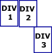

3 Columns Without TablesIt is possible to construct multi column web pages without using tables. Pages developed in this manner will be easier for search engines to navigate. It is however, harder to construct pages using these methods that will appear the same in all browser types. We have already provided a lesson for a 2 column page, but have had requests for pages with 3 or more columns. Since most of our users learn by copying code we provide a 3 column gripe page that is constructed without using tables. After you open the page just right click on it and choose View Source. |
|
|
You must be extra careful to test pages developed in this manner in as many different web browsers as possible. We tested the page using Netscape 7.1, IE 5.5 and Mozilla 5.0. The page displays differently in all 3 browsers, but a 3 column set up is produced by all. The key code for making the web page work properly is provided using CSS. 3 divisions are defined using the class operative. div.left{ width :20%;float : left;}div.middle{ width :60%;float : left }div.right{ width :20%;float :left }
To make the web page work properly in Netscape and Mozilla you must pay careful attention to the widths of the divisions. If you add padding or borders to horizontally adjacent divisions you must decrease the width of the divisions. When making these adjustments it is a good idea to set your monitor resolution to its lowest setting. The more padding you add to a division or the wider the border, the lower the width settings. Note: Monitor Resolution will affect the way your page will display. Test at different resolutions. If you are not careful and build your pages at an 800X600 resolution or higher, someone surfing the web with a monitor resolution set to 640X480 might see your page as shown on the left.
This is the HTML code for the page. Note the method of adding the class definitions.
<div class="left">
<br clear="all">
|